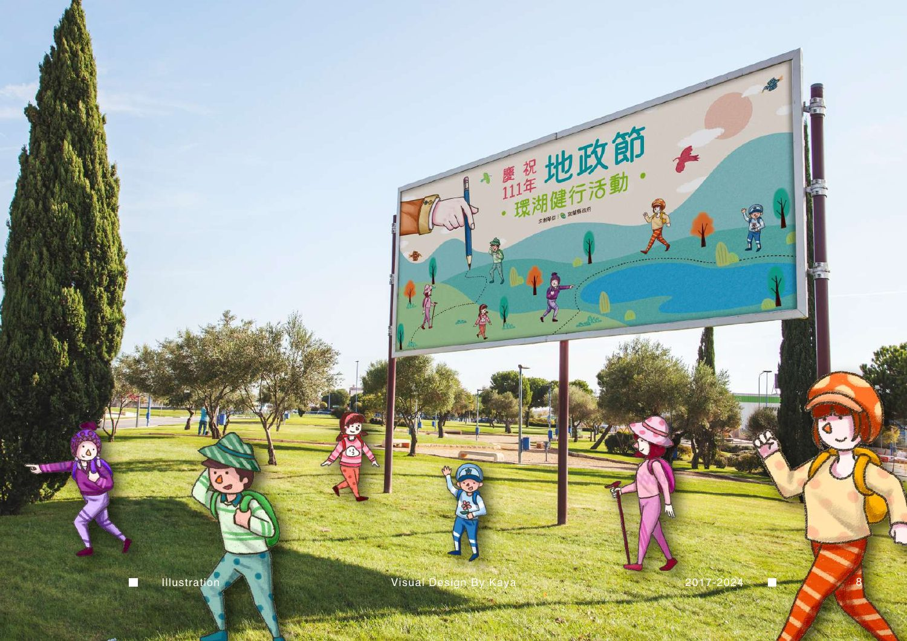

KAYA
®
PROJECT 03
/ 10
作品一覧へ ↗
SELECTED WORK / 03 — 10
Visual Design
地政節 湖畔ウォーキングイベント

メインビジュアル / PAGE 11
PORTFOLIO ORIGINAL
プロジェクト詳細
02 PAGES
作品ページ / 12
KAYA PORTFOLIO 2017—2024
← 前の作品 / Year of the Rabbit
次の作品 / Succuba Secret Fruit ↗